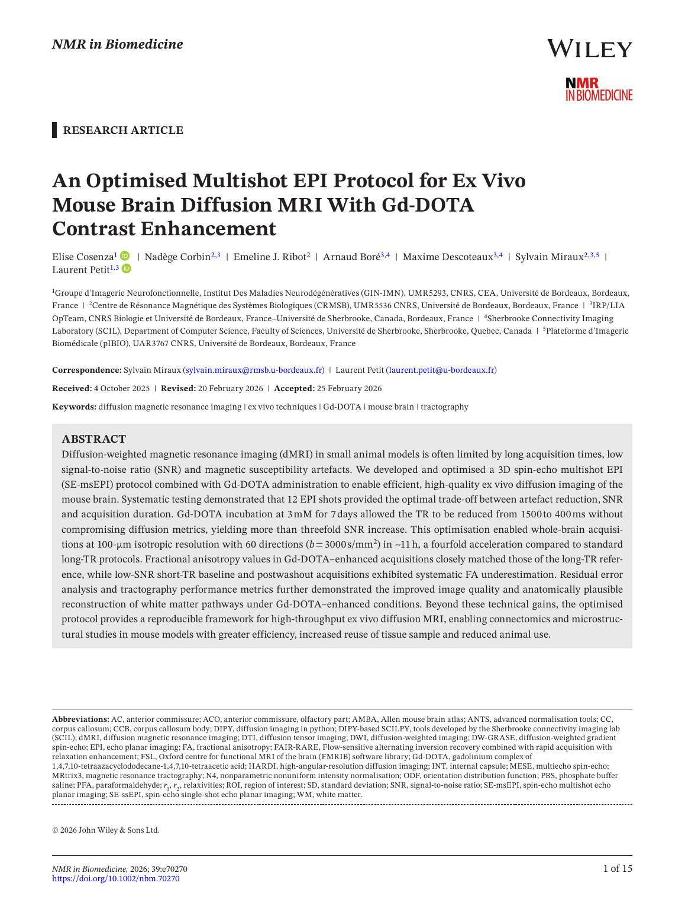
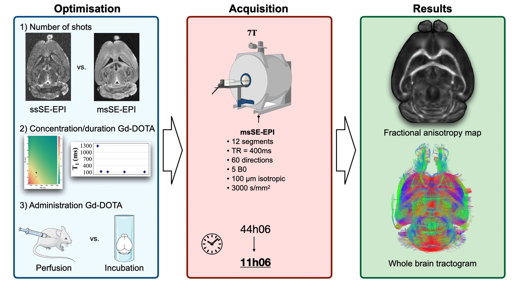
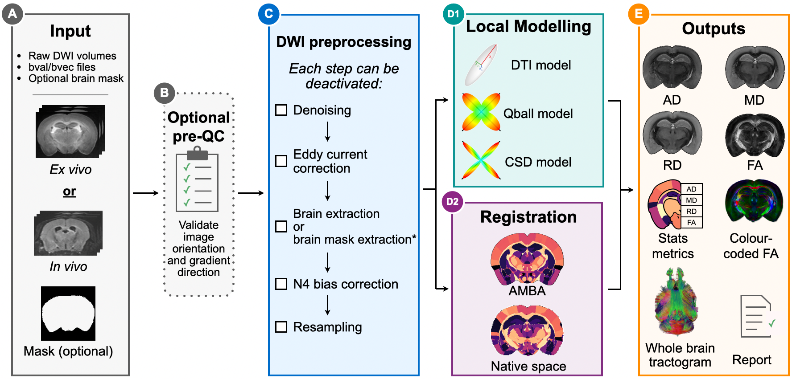
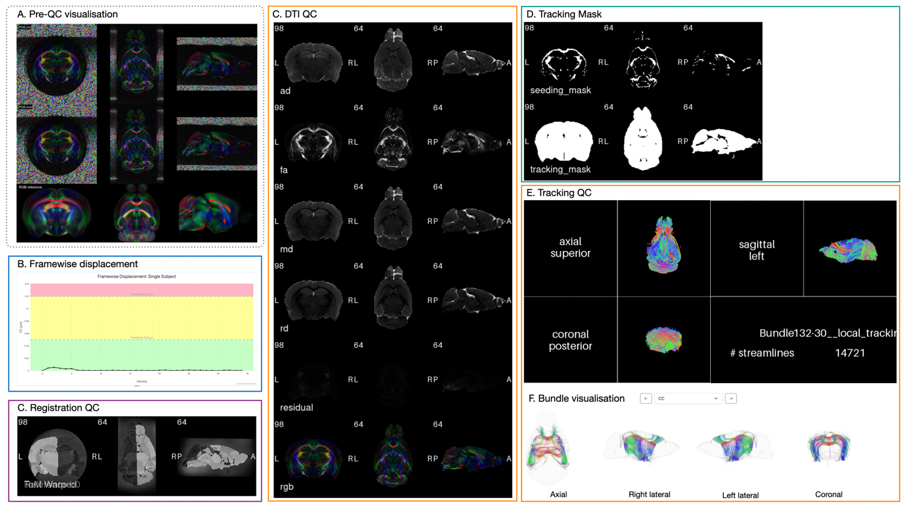
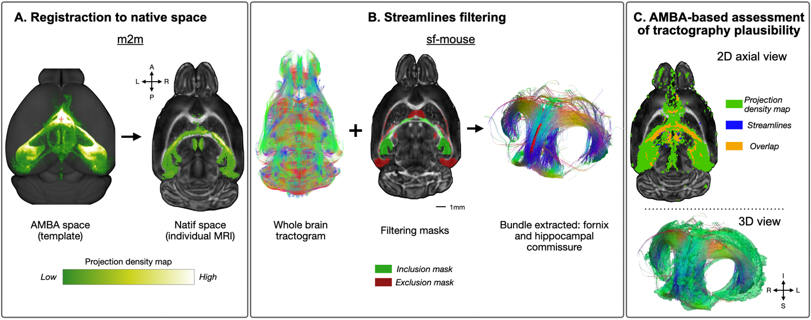
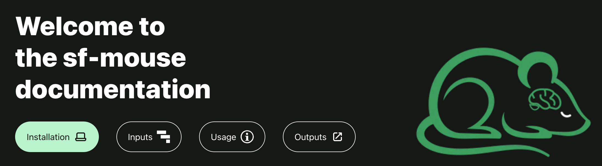

01
OPTIMIZE THE ACQUISITION
OPTIMISER L’ACQUISITION

Better data in.
De meilleures données en entrée.
Cosenza et al. · NMR in Biomedicine · 2026
Open full article ↗ Ouvrir l’article ↗High-resolution mouse dMRI is only as useful as the workflow that turns it into reliable, traceable and anatomically interpretable measurements.
L’IRM de diffusion haute résolution chez la souris ne prend toute sa valeur que si son traitement transforme les acquisitions en mesures fiables, traçables et anatomiquement interprétables.

Cosenza et al. · NMR in Biomedicine · 2026
Open full article ↗ Ouvrir l’article ↗sf-mouse
Manuscript in preparation
Article en préparation
Visit the official website for documentation, installation and examples.
Consultez le site officiel pour la documentation, l’installation et les exemples.

sf-mouse turns heterogeneous mouse dMRI datasets into standardized and traceable outputs. The workflow integrates diffusion-specific preprocessing, automated brain masking, Allen atlas registration, DTI/Q-ball/CSD modelling, tractography, atlas-based quantification and visual QC in a containerized Nextflow framework.
sf-mouse transforme des jeux de données d’IRMd de souris hétérogènes en sorties standardisées et traçables. Le workflow intègre prétraitement spécifique à la diffusion, extraction automatique du cerveau, recalage sur l’atlas Allen, modélisations DTI/Q-ball/CSD, tractographie, quantification atlas et contrôle qualité visuel dans un environnement Nextflow containerisé.

Every major processing stage produces visual QC outputs. These are aggregated into a subject-level HTML report so that gradient orientation, preprocessing, brain extraction, registration, diffusion maps and tractography remain inspectable rather than hidden inside a black box.
Chaque étape majeure produit des sorties visuelles de contrôle qualité. Elles sont regroupées dans un rapport HTML individuel afin que l’orientation des gradients, les prétraitements, l’extraction cérébrale, le recalage, les cartes de diffusion et la tractographie restent inspectables plutôt que cachés dans une boîte noire.


sf-mouse brings Allen Mouse Brain Atlas information into each subject’s native diffusion space. Selected tractography bundles can then be compared with independent tracer-derived projection maps. This provides a QC-oriented measure of anatomical plausibility while remaining distinct from a complete biological validation of streamline accuracy.
sf-mouse transpose les informations de l’Allen Mouse Brain Atlas dans l’espace natif de diffusion de chaque sujet. Des faisceaux sélectionnés peuvent ensuite être comparés à des cartes de projection indépendantes issues du traçage. Il s’agit d’un indicateur de plausibilité anatomique destiné au QC, distinct d’une validation biologique complète de l’exactitude des streamlines.
Installation, input organisation, execution profiles, usage examples and output documentation are maintained in the official sf-mouse website.
L’installation, l’organisation des données d’entrée, les profils d’exécution, les exemples d’utilisation et la documentation des sorties sont maintenus sur le site officiel de sf-mouse.
Explore sf-mouse ↗